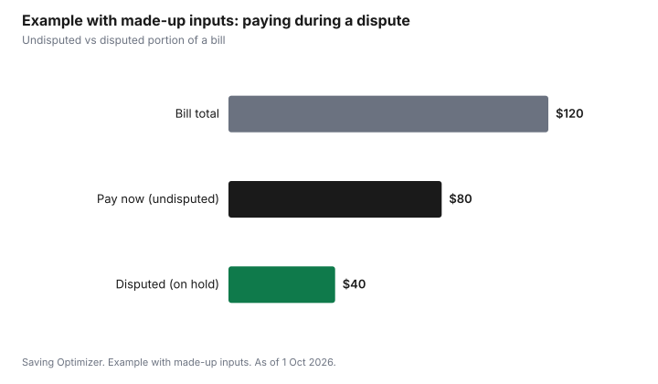

Technology · Canada
Disputing a Phone or Internet Bill in Canada: The CCTS Complaint Process
In Canada, you can dispute a phone or internet bill for free through the Commission for Complaints for Telecom-television Services (CCTS), but only after you give your provider a chance to fix the problem. Contact the provider first and keep notes. If it is not resolved, file a CCTS complaint online, which takes about 15 minutes. The provider must report back to the CCTS within 20 days, must stop collecting the disputed charges while the complaint is open, and can be required to correct the bill or reimburse proven losses up to $5,000.
Key takeaways
- Step 1: contact your provider and explain the problem. Note dates, names and reference numbers.
- Step 2: if unresolved, file with the CCTS online. It is free.
- The provider must report back to the CCTS within 20 days.
- Disputed charges: collection must stop while the complaint is open. Keep paying undisputed charges.
- Remedies: explanation or apology, correction, or reimbursement of proven losses up to $5,000.
Before you file: the provider step
Call, chat or write to your provider. Explain the charge, what you think is wrong and what you want. Ask for the issue to be escalated if the first agent cannot help. Keep a record: dates, agent names, reference numbers, and copies of bills, contracts and promotions. The CCTS will not accept a complaint until the provider has had a chance to resolve it.
The CCTS process
| Step | What happens |
|---|---|
| Submission | You file online; the CCTS checks that it is within its mandate |
| Provider response | The CCTS sends the complaint to the provider, which works with you and reports back within 20 days |
| Conciliation | If unresolved, the CCTS mediates between you and the provider |
| Investigation | If still unresolved, the CCTS issues findings on whether the provider met its obligations |
| Remedy | You can accept or reject the findings; if accepted, the provider must implement them |
What the CCTS handles
The CCTS handles complaints about phone, wireless, internet and some TV services from participating providers: billing errors, contract disputes, service problems, unexpected charges and Wireless Code or Internet Code issues. It does not fine providers or set prices; that is the CRTC's role.
Step by step: building your complaint
- Gather your documents: the bills in dispute, your contract and critical information summary, any promotion terms, and screenshots of the offer.
- Write a short timeline: what happened, when you contacted the provider, who you spoke to, reference numbers and what they said.
- State the remedy you want in one sentence: for example, a credit of a specific charge, a corrected plan price, or an end to collection activity.
- Give the provider a clear chance to fix it, and ask for escalation to a supervisor if the first contact cannot help.
- If it is not resolved, file online with the CCTS and attach your documents. Keep paying charges that are not in dispute.
- Respond promptly when the provider contacts you after the CCTS forwards the complaint.
Codes the CCTS applies
When the CCTS investigates, it looks at your contract, the provider's terms of service, and codes of conduct set by the CRTC. Knowing which code applies helps you frame the complaint.
| Code | Covers | Examples |
|---|---|---|
| Wireless Code | Mobile phone and data services | Overage caps, trial periods, unlocking, contract summaries |
| Internet Code | Home internet services | Promotional price clarity, bill shock limits, contract changes |
| Television Service Provider Code | TV services from participating providers | Clear offers, service calls, cancellations |
What the CCTS does not handle
- Fines or penalties against providers; that is the CRTC's role.
- Disagreements with general prices set for all customers, as opposed to the price you were promised.
- Complaints about providers that are not participating in the CCTS for TV services.
- Matters already decided by a court or another tribunal.
If the CCTS is not the right place, it refers you to the appropriate organization.
After the CCTS decides
If you and the provider agree on a resolution, the provider must carry it out. If the CCTS issues investigation findings, you can accept or reject them. If you accept, the provider must implement any remedy, and you release the provider from further claims about that complaint. If you reject them, the provider does not have to apply the remedy and you keep your other legal options. Either side can ask for a case review if it believes the CCTS made an error of fact or interpretation that affected the outcome.
Common mistakes
- Filing with the CCTS before contacting the provider; it will not accept the complaint yet.
- Withholding the whole bill. Pay the charges that are not in dispute to avoid collections on those.
- Not keeping proof of the promised price; save screenshots, chat transcripts and emails.
- Ignoring the provider's contact after the complaint is forwarded.
- Asking for a remedy you cannot support with documents.
Example with made-up inputs: a disputed charge
These numbers are an example with made-up inputs. A $120 monthly bill includes a $40 charge the customer disputes. While the complaint is open, the customer pays the undisputed $80; the provider cannot collect the $40 until the complaint is closed.
| Item | Amount |
|---|---|
| Bill total | $120 |
| Disputed charge | $40 |
| Pay now (undisputed) | $80 |

Sources
- CCTS, Complaint Resolution Process Explained, as of 1 Oct 2026. Contact the provider first; filing takes about 15 minutes; provider reports back within 20 days; collection of disputed charges stops; remedies include reimbursement of proven losses up to $5,000.
- CRTC, The Wireless Code, Internet Code and Television Service Provider Code, as of 1 Oct 2026.
- The amounts in the example table and chart are made-up inputs.
Frequently asked questions
Is the CCTS free?
Yes. Filing a complaint with the CCTS is free for consumers.
Do I have to contact my provider first?
Yes. You must give your provider a chance to resolve the problem before the CCTS will accept your complaint.
Do I have to pay a disputed bill?
While a CCTS complaint is open, the provider must stop trying to collect the disputed charges. You must still pay charges unrelated to the complaint.
How long does the provider have to respond?
After the CCTS forwards your complaint, the provider must report back within 20 days.
What can the CCTS make a provider do?
Explain or apologize, correct the problem (such as a billing error), or reimburse proven financial losses up to $5,000.
What documents should I include in a CCTS complaint?
Your bills, contract and critical information summary, promotion terms, screenshots, and a timeline with dates, names and reference numbers from your contacts with the provider.
Which rules does the CCTS apply?
Your contract and terms of service, plus CRTC codes such as the Wireless Code, the Internet Code and the Television Service Provider Code.
Can I reject the CCTS findings?
Yes. If you reject them, the provider does not have to apply the remedy and you keep your other legal options. If you accept, the provider must implement the remedy.
Does the CCTS handle TV complaints?
It handles complaints about TV services from participating providers, as well as phone, wireless and internet services.
Researched and drafted with AI assistance and fact-checked against official Canadian sources. How we create content.
Disclosure: The CCTS and CRTC are named as public bodies, not partners. Providers are not named or ranked. Saving Optimizer may earn a commission if a partner link is added later; no partnership is claimed. Education only. This is not legal advice.